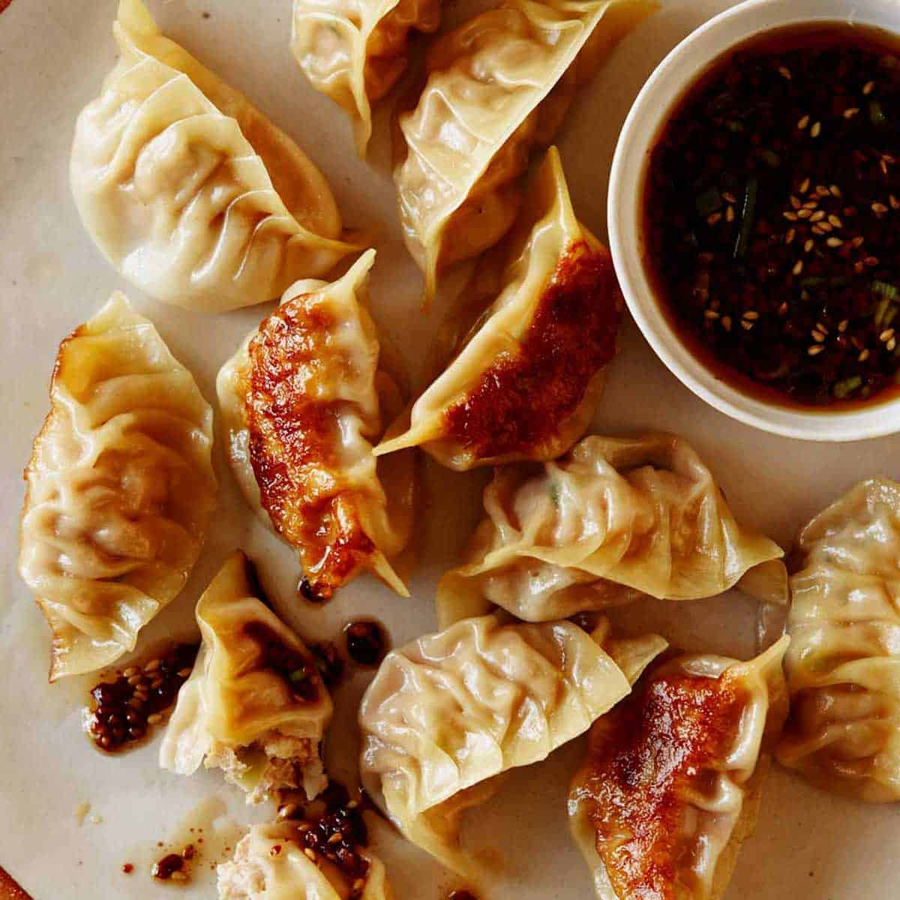

Potstickers

Ingredients
- 1⁄2 lb ground pook, uncooked
- 1⁄4 cup finely chopped scallions or green onion
- 2 TBS finely chopped red or green bell pepper
- 1 egg, lightly beaten
- 2 tsp ketchup
- 1 tsp prepared yellow mustard
- 2 tsp Worcestershire sauce
- 1 tsp light brown sugar
- 1 1⁄2 tsp kosher salt
- 1⁄2 tsp freshly ground black pepper
- 1⁄4 tsp cayenne pepper
- 35-40 small wonton wrappers
- 3-4 TBS vegetable oil, for frying
- 1 1⁄3 cups chicken stock, divided
Preheat oven to 200 degrees F.
Combine the first 11 ingredients in a medium-size mixing bowl (pork through cayenne). Set aside.
To form the dumplings, remove 1 wonton wrapper from the package, covering the others with a damp cloth. Brush 2 of the edges of the wrapper lightly with water. Place 1/2 rounded teaspoon of the pork mixture in the center of the wrapper. Fold over, seal edges, and shape as desired. Set on a sheet pan and cover with a damp cloth. Repeat procedure until all of the filling is gone.
Heat a 12-inch saute pan over medium heat. Brush with vegetable oil once hot. Add 8 to 10 potstickers at a time to the pan and cook for 2 minutes, without touching. Once the 2 minutes are up, gently add 1/3 cup chicken stock to the pan, turn the heat down to low, cover, and cook for another 2 minutes. Remove wontons to a heatproof platter and place in the warm oven. Clean the pan in between batches by pouring in water and allowing the pan to deglaze. Repeat until all the wontons are cooked. Serve immediately.